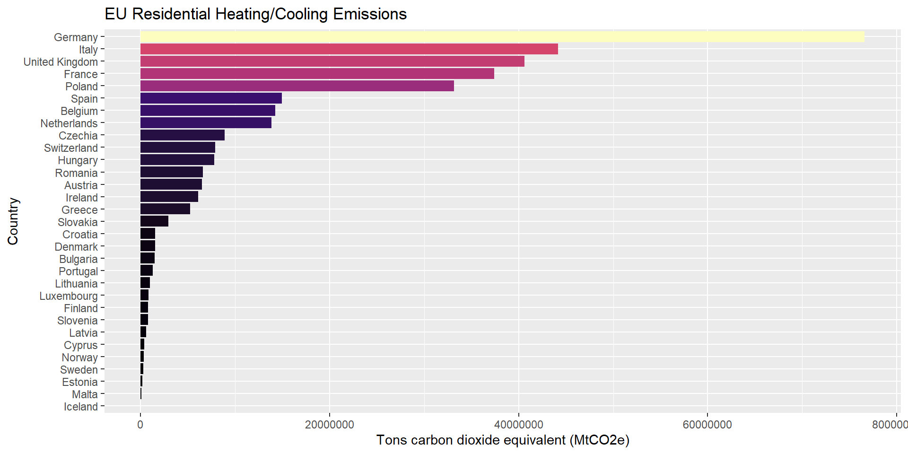

Challenges in Transitioning the UK to ‘Net-Zero’ – Some Observations from Housing and Transport
Professor Adam Dennett - @adam_dennett
Bartlett Centre for Advanced Spatial Analysis, University College London
August 21, 2024
About Me
- Professor of Urban Analytics in the Bartlett Centre for Advanced Spatial Analysis (CASA), University College London
- Just stood down after 5-years of being Head of Department for CASA
- Arrived as post-doc in 2010
- Grown to 18 full-time academics (3 in 2010!)
- 150 Masters Students across 2 MSc Programmes
- 20-odd PhD students
- Lifetime geographer - although didn’t ever really have any plans to be, it just sort of happened!
What am I going to talk about today?
Housing
A little bit of background on the important (and often overlooked) part that residential buildings play in our journey towards a carbon net-zero country.
The leaky homes problem we have in the UK
How we can measure leaky homes - Energy Performance Certificates
What needs to be done to fix leaky homes and the problems ahead
Overview of findings from recent Frontiers in Sustainability paper which looks at national variations in energy efficiency by property, neighbourhood and local authority type.
Transport
Background on UK transport policy, the neglect of social inequalities in this domain and the role of models in transport planning and net-zero ambitions.
CASA’s new collaboration with Arup City Modelling Lab and how we are going to use activity-based models to explore equity in transport planning and policy.
Introduction to activity-based models and how they might offer new perspectives which might assist the transition to net-zero
Some ongoing research in the preliminary stages which is going to leverage activity-based models
Observations and conclusions
UK CO2 Emissions
The UK Government has legally binding targets under the Climate Change Act 2008 to reach ‘net zero’ carbon emissions by 2050
Carbon emissions are produced through demand for energy
- directly through burning gas, wood, coal, peat, oil for heat/cooking etc. in buildings and through petrol and diesel combustion in vehicles, kerosene combustion in flights as well as other uses in agriculture and industry
- indirectly through burning these things to produce electricity
Residential buildings currently account for about 13.7% of the UK’s total greenhouse gas emissions - heating, cooling + running applicances.
Domestic Transport currently accounts for almost 28% of total greenhouse gas emissions
While total Greenhouse Gas emissions have reduced since 1990, housing and transport are now responsible for a greater proportion of this total than ever before (up from 25% to almost 42%) - and still produce around 169 million tons of CO2 per year
UK Housing and CO2 Emissions
Source: Eurostat + UK Government
- Housing in the UK is some of the worst, overall, in Europe for emitting greenhouse gases.
UK Housing and CO2 Emissions
Source: Eurostat + UK Government
- Even after adjusting for population, UK housing stock is responsible for emitting far more CO2 than housing in countries with much colder climates like Iceland, Sweden, Norway and Finland
Leaky Homes
In 2021, the National Housing Federation reported that a combination of gas central heating and poor insulation meant that as heat easily leaks from many of the UK’s homes, it requires even more gas to heat them.
The average family or household in England is currently producing more CO2 every year by just living in their home than they are by driving their car!
Three in every five (60%) homeowners don’t think their home energy use has much of an impact on carbon emissions. More than one in four homeowners (28%) have no plans to make “eco-upgrades” to their homes in the next ten years.

The UK Housing Stock
- UK Housing Stock is incredibly diverse in terms of its morphology, but important fact is that most of it is OLD
- Age is relevant as insulation standards are only a relatively recent innovation and there is a conspicuous absence of a national programme of retrofitting to improve old stock
- Political ineptitude over recent decades means rates of improvement through insulation and other forms of improvement have been slow
How do we know how leaky our homes are?
- Energy Performance Certificates were introduced in England and Wales in August 2007 (common across most EU countries)
- A valid certificate (they last for 10 years) is now required for any property sold or rented in the UK
- Every property gets a current rating - A to G - alongside a potential rating, which relates to what it could achieve with better insulation, double glazing, etc.
- EPCs are created by surveyors who use something called the ‘Standard Assessment Procedure’ (SAP) to rate the building. SAP accounts for things like:
- Size of building
- Age of Building
- Building materials used
- Glazing
- Heating and hot water type
- Type of lighting
- The SAP is an imperfect science and prone to human error, but it’s the best method currently available
What does the government want?
- 80% of the homes we will be living in in 2050 are already built now, so we need to focus on improving the housing stock we already have
- The Clean Growth Strategy was published in October 2017 and includes several targets to improve energy efficiency:
- to upgrade all fuel poor homes to Energy Performance Certificate (EPC) band C by 2030;
- to upgrade as many homes as possible to EPC band C by 2035
But is this enough and how are they going to achieve it?
https://www.gov.uk/government/publications/clean-growth-strategy
Making homes more energy efficient + additional benefits & challenges
- ‘Retrofitting’ -> process of improving:
- insulation
- ventilation
- air-tightness
- upgrading
- heating (e.g. to heat-pumps)
- lighting (LED bulbs)
- installing smart thermostat and heat control devices
- installing solar panels
- Any one could improve energy efficiency, but doing all at once is known as ‘Deep Retrofit.’
Making homes more energy efficient + additional benefits & challenges
- Retrofitting has other benefits:
- Health - The Building Research Establishment estimates that poor housing costs the NHS £1.4bn per year in additional treatments, with excess cold causing the most problems.
- Jobs - National retrofit programme could create thousands of jobs, benefiting the wider economy;
- Energy security - making us less reliant on imported fossil gas for heating
- But, retrofitting is expensive (up-front cost) - recent estimates are that the average cost of retrofitting a property to Grade C or above would cost £35,000 - even basic insulation costs can run into many thousands of pounds.
- Saving money on heating will eventually make this money back, but it could take many years
What needs to be done?
- Insulate Britain - pressure group - Estimates that 1.5 homes per minute need to be retrofitted up until 2050 to hit our legally-binding net-zero target - something that we are currently far from achieving.
- Retrofit is expensive
- Route retrofit unclear for many people (where should I start, who can do it for me?)
- Central government needs to develop proper incentives
- Direct funding (grants)
- or tax incentives
- Schemes such as those available in Ireland (where government recommends suppliers, installers etc.) needed to help people get started
- Insulate Britain highlights that UK government currently doesn’t have a long-term strategy or funding mechanism in place to upgrade/retrofit homes to meet our climate commitments
How can we get there?
Understanding the various dimensions (scale, location, social etc.) of the housing energy efficiency challenge is crucial to effective strategy and planning.
- Which housing / owners should be targeted first to accelerate the transition?
Paper in Frontiers in Sustainability (and related working paper) a first effort to define the parameters of the problem and explain the variance in energy performance across the UK.
- How much variation in energy performance can be attributed to factors at the property, neighbourhood and local authority levels?
Analysing Spatial Data on Domestic Energy Performance
The Department for Levelling Up, Housing and Communities (DLUHC) collects and maintains data on every Energy Performance Certificate issued in England and Wales. The database is available as Open Data for anyone to explore and analyse.
The latest edition of the EPC dataset (Version 10) contains some 25 million records (some repeat entries) which equate to about 14 million residential properties in the England and Wales - just over 50% of the 26.7 million that exist.
More recent entries to the EPC database feature a Unique Property Reference Number (UPRN) which enables us locate precisely where each property is located
Energy Efficiency vs environmental Impact
- We analysed 14m properties in the EPC dataset
- Each home has two scores associated with it:
- Energy Efficiency (0-100) - how much energy used - related to running costs
- Environmental Impact (0-100) - level of CO2 emissions associated with energy use (clean electricity much better than buring coal, for same energy output)
- More or less energy efficient / environmentally impactful homes are not spread evenly across the country - some places and some types of neighbourhood are more or less likely to have energy efficient homes
Average Energy Efficiency and Environmental Impact by Local Authority - Source, https://epc.opendatacommunities.org/
Energy Efficiency vs environmental Impact
- Most properties fall in the same band for efficiency vs impact, however:
- Red = Better Energy Efficiency (e.g. some double glazing, insulation), worse environmental impact (heated by fossil fuels)
- Green = Worse Energy Efficiency (e.g. poor insulation), better environmental impact (heated by electricity)
Location
- Depending on which part of the country you are living in, you are more likely to be living in a particular type and size of property
- Accounting for the type, size, age and other characteristics of a property relative to energy efficiency is important if we want to show where energy efficiency is better or worse than we would expect
Age
- Energy Efficiency is strongly correleated with the age of the property - older properties are on average less energy efficient, more modern properties are more energy efficient
- Band C (69 and above) is the government target for efficient homes.
- If your property was built after 2003, you have a very high probability of being band C or higher
- As properties get older the variation in their efficiency gets greater, but the probability of being band C or above gets much lower.
- Any property built before World War II has a high probabilty of being below band C
Tenure
- Tenure: Whether the house is owner-occupied, privately rented or socially rented is also very important - Socially rented housing has far better energy efficiency than all other housing tenures (only 30% worse than band C)
- Various reasons for this:
- social landlords more conscious of the needs of residents, some large retrofit programmes
- social housing more likely to be flats
- Private Rental housing has a bad reputation for quality and unscrupulous landlords and is bad with around 75% worse than band C
- But Owner Occupied housing is worse still, with less than 20% band C or above.
Property type / Age
- The type of property - i.e. whether it is a flat, detached, semi-detached or terraced house is important (the fewer outside walls the better!)
- Older detached housing with more external walls and larger floor areas has the worst energy efficiency - even some modern detached housing has poor energy efficiency (Bottom Right)
- Terraced flats and maisonettes with fewer external walls and smaller floor areas have the best energy efficiency, with even older properties more likely to be rated C or above than some more modern terraced and semi-detached housing
Accounting for Energy Efficiency Variations
- Baseline linear (regression) model - Dependent variable = Energy Efficiency Score ~ building characteristics:
- age
- dwelling type
- tenure
- floor area
- and which Local Authority the property was found in
- Age most significant variable in energy performance, closely followed by tenure and dwelling type
Accounting for Energy Efficiency Variations
- Local Authority location is important, but different stock mix (more modern flats in cities, older detached properties in rural areas) key
- Map on the right: Expected avg EPC points better or worse (per property) than Tower Hamlets (best local authority) - after controlling for building characteristics
- Map on the left: residuals - where actual avg EPC values are lower/worse (<1 - red) or higher/better (>1 - orange to blue) than we might expect, given the housing stock mix.
- Central London, in particular, Islington, Hackney and Hammersmith and Fulham performs worse than expected given the benefits afforded by stock-mix, alongside Harlow in Essex, Eastleigh in Hampshire, Norwich, Lincoln and Sunderland
Capturing Random Variance and Spatial Hetrogeneity
Question: To what extent can variations in energy efficiency be attributed just to property-level factors? And to what extent do local neighbourhood factors and local government influences (much planning and housing policy is devolved to local authorities in the UK) play a part too?
Multilevel model extends earlier model to account for similarities/differences at various spatial scales & within different groupings (neighbourhood, local authority) of properties, while controlling for property specific variables (e.g., age, floor area, etc.).
The variance components model is baseline Multilevel model and has no explanatory variables, but attributes variation in energy consumption / efficiency per m2 to grouping levels in the model
Variance Components model:
\(y_{ijk} = \in_{LA}z_{k}+\in_{OA}z_{jk}+\in_{0}z_{ijk}+c\)
where:
\(y\) = the predicted energy consumption (kWh/m2) of a property; \(c\) is the y-intercept.
• \(i\): a particular property
• \(j\): a particular OA Output Area - neighbourhood)
• \(k\): a particular LA (Local Authority e.g. town or small city level)
Results:
geographical location alone—as defined by a property’s OA and LA—can explain about 15% of the variance in predicted energy consumption per m2.
vast majority of this variance (85%) is between individual properties at the lowest level. Of the variance accounted for by the higher levels, much more can be attributed to differences between neighbourhoods (OAs) (13%) than to differences between LAs (2%).
Capturing Random Variance and Spatial Hetrogeneity
- Full model adds property and various grouping factors into the mix and increases the proportion of variance explained by the model as a whole from 15% to 31%, based on the conditional R2.
- much of the variance in energy performance (69%) remains unexplained by any of the features of the model. This variation may be attributed to measurement errors such as inconsistencies in measures between surveyors or biases in the surveys etc.
- Property features are significant and these together account for about 23% of the overall variance in the estimated energy consumption per property
- once we control for age and type, the energy efficiency of privately rented homes appears to be practically indistinguishable from that of owner-occupied properties
- after controlling for property mix, more disadvantaged areas seem to have more efficient housing
- we see little evidence that more affluent groups are preferentially selecting more efficient properties or that they are taking action at higher rates—quite the opposite
Full Multilevel model:
\(y_{ijk} = m_{0}. x^{'}_{ijk}+m_{1}. x_{jk}+\in_{LA}z_{k}+\in_{OA}z_{jk}+\in_{0}z_{ijk}+c\)
where:
\(m_{0}. x^{'}_{ijk}\) = a vector of variables relating to the properties, e.g. age, tenure, building type, floor area etc.and random (grouping) effects at the neighbourhood and local authority levels
and
\(m_{1}. x_{jk}\) = a vector of dummy variables relating to types of neighbourhood or local authority, defined by geodemographic classifications, e.g. multicultural metropolitans, hard-pressed living, rural residents, affluent living etc.
Dimensions of the Housing Energy Efficiency Challenge - Conclusions
At the highest geographic scale, residential energy efficiency varies comparatively little between local authorities. All face broadly similar challenges.
- This is perhaps surprising given that local authorities have been given a central role for coordinating efforts in this area for some time
At the neighbourhood scale, we do not see strong relationships between the social composition or socio-economic status of neighbourhoods (output areas) and energy efficiency, contrary to what we might have expected
it appears that more socially advantaged groups are not choosing (or able) to use their resources to achieve more sustainable housing
qualitative research from Scotland suggests a general awareness of and support for the “net zero” goal but, on the other, limited awareness of what this might mean for them or any sense that they were responsible for acting in relation to their own homes
Barriers cited by homeowners included costs but also a sense that, without “a clear, personal financial benefit from upgrading,” it was for Government or business to lead the way
Once we allow for the fact that private landlords tend to own smaller, older properties, the energy efficiency levels reported appear no lower than those for owner-occupiers
- There has been much discussion of the reasons why private landlords may be less likely to invest in energy efficiency since it is tenants rather than landlords who get the direct benefit from improvements in terms of lower bills. However, our data do not support the underlying premise that energy efficiency is therefore lower in the private rented sector
What about Transport and Net-Zero?
UK government keen to decarbonise transport - 2021 Department for Transport Report:
“We cannot simply believe that zero emission cars and lorries will meet all our climate goals or solve all our problems. They will not.”
“we must increase the share of trips taken by public transport, cycling and walking. We want to make these modes the natural first choice for all who can take them”
Great start, BUT - issues of EQUITY (i.e. will everyone benefit equally and according to their needs in this transition) NOT mentioned AT ALL in the report.
Transport, Net-zero and Equity
- In the UK, transport investment justified in terms of economic benefits, journey time reductions, carbon savings etc.
- Models commissioned by government and used to support transport policy and investment in UK often narrowly focused on these outcomes
- Little attention has been paid to justifications relating to the mediating effect that transport has on social inequalities
- Danger that in the rush to decarbonise, some already disadvantaged groups may stand to lose out - e.g. those who rely on cars for work and who can’t easily shift, the rural poor, disabled or elderly
- New paper from our group exploring some of the issues ->
CASA / Arup City Modelling Lab
- Arup City Modelling lab has, for a decade, been developing large-scale activity-based transport models for clients across the world to assist with transport planning and policy making - many recent projects around net-zero transition
- Where Arup’s models and tooling are developed with, primarily, client-centred outcomes in mind, our academic motivation is see if we can re-purpose these models to delve deeper and more critically into wider sets of equity-related outcomes:
- what are the modelling/policy/decision making dynamics and interactions between client and consultant that lead to regional transport decisions being made? How are regional transport models being used? How could they be used with respect to social equity?
- what are the equity considerations around the transition from fossil-fuelled to electric private vehicles? Can we develop a better, micro-level activity-based understanding of car dependency? What mitigating or exacerbating effects might new technologies like vehicle-to-grid charging present?
- How can complex, agent-based behaviourally-orientated transport models (such as MATSIMs) can be used to inform decisions around the provision of public transit - particularly buses - in UK transport systems? How might artificial intelligence methods be applied in developing generative solutions to various aspects of bus provision in different urban and regional settings?

Activity-Based Transport Models
Activity-based models focus on the individual activities of (simulated) people (agents) and are able to capture the complexities of daily life, considering how people allocate time to activities throughout the day and on different days of the week
Individual decisions are based on personal attributes (age, job, wealth etc.), preferences (whether prefer to drive or cycle) and constraints (whether can afford a car, have children to take to school) etc.
Agents in the model can respond to physical and political environments - thus useful for testing different policy scenarios (road pricing, free bus travel for children etc.)
Allow for considerable granularity (spatial, temporal, agent attribute) but can be large (numbers of agents), computationally expensive, require detailed data inputs (travel diaries, road networks etc.) difficult to calibrate and not easily used by non-experts.
Transport East Project - decarbonising regional transport
Claude Lynch - PhD student in our group - is using activity-based model implemented using MATSIM developed by Arup for Transport East (sub-national transport body)
Simulates a 10% version of East of England population and their daily activities - 600,000 agents
Aim to evaluate transport planning interventions that help get us closer to a ‘net-zero’ transit system in the region - while examining how these might also affect socio-economic inequalities
BUT?
How are transport models and tools like the TE MATSIM deployed in the real world (and how to they affect policy change)?
Interviewing practitioners from 7 Sub-National Transport Bodies in England, Department for Transport and Transport Planning Consultancies
Transport East Project - decarbonising regional transport
Initial findings from Interviews:
- Transport planning as a practice is very far away from transport planning academia: “You build this tool, based on lots of data and analysis and whatever else, and you use it once to get a Benefit Cost Ratio out of it. … it’s all driven by just one thing, and it’s how do you feed that into that sausage machine, and at the end, something comes out.” (Amey 1, 74:56)
- “Despite all the best intentions today, we might calculate these things and put them in, but you can’t escape the fact that most things we do, we’re looking at what’s the revenue impact, revenue’s the currency that we all work to. There’s lots of nice things out there that we would all want to do, but you have to be able to afford them.” (TfL 2, 50:40)
- The financial environment around transport planning encourages bad practice with respect to collaboration and open source development - lack of investment in in-house expertise means model development outsourced to consultants: “We had to fight to retain IP of our models done by consultants, like, how can you have additive agglomerative evidence base if you’re paying for everything on spec every time? It just doesn’t work.” (TfN 2, 25:07)
De-carbonising Private Vehicle Transit
- Maria Wood (PhD Student) looking at equity issues around car dependence and the transition to electric vehicles
- New registrations declining and electric vehicles increasing
- But, car usage still high and how do we transition to a decarbonised system in an equitable way?
Equity, vulnerability, and flexibility
Equity can be seen as minimising
transport vulnerability across
the whole populationWe can consider flexibility to
be a form of capital, much
like money or timeVulnerability can be seen
through the lens of
flexibility capacityMany facets of flexibility
Car dependency
Car dependency is a manifestation of low mode choice flexibility capacity
| Dependency | Description |
|---|---|
| Individual | A person is dependent on their private vehicle in general |
| Trip-based | Certain journeys are dependent on private vehicles e.g. large shopping trips or escorting others |
| Structural | Physical dependency on private vehicles e.g. disability or lack of provision of alternatives |
| Conscious | Perceived dependency on private vehicles e.g. habit, convenience, preference |
Quantitative modelling of flexibility
Lack of robust quantitative analysis of equity impacts in transport transition
Aim to inform which policies are most effective at delivering decarbonisation while maximizing equity
Use calibrated Arup MATSIM for a UK region or city (e.g. Sheffield) to understand this with flexibility capability measured as a kind of utility score
Where under different model runs and scenarios, agents select a first-choice travel preference (with associated utility score) from a range of possibilities
Can 2nd, 3rd, nth choices considered and scored be used to model flexibility capital for different socio-economic groups in the model?
For those with lower traditional flexibility capital, what benefits might novel flexibility innovations like Vehicle-To-Grid charging bring?
Can benefits of system-wide demand peak-smoothing for electricity be shared?
Buses, Net-Zero and Equity
- Tom Murat (PhD Student) - looking at how we can use agent-based models to understand the equity implications of bus provision in UK cities
- Low-income population most likely to use and rely on buses.
- 69% of Londoners earning under £20,000 use buses at least weekly, compared to 59% of all Londoners (Rosenberg, 2022).
- 10% of all bus passengers are disabled (Rosenberg, 2022).
State of Buses
- Privatisation - Crash in bus ridership and route availability.
- £2 fare – Introduced to increase ridership since COVID-19.
- Bus Franchising – Devolution of transport to combined authorities - Greater Manchester (2023), West Midlands (2025), Liverpool (2026)
Toy Model Outline
Using Matsim – Agent Based Modelling
Londinium model - Semi synthetic dataset with 100 agents covering Fulham, Chelsea, Battersea and South Kensington.
- Developed by Arup, open access
Policy Ideas Tested: Free Buses, No Buses, No Tube, Increasing Car Cost
Measures: Travel Time, Total Distance, Mode Share
Purpose: Learn the model, what’s possible and what’s not
Model Results - Mode Share
Model Results - Average Distance
Model Results - Average Duration

Going Forward
Implement lessons learnt into a calibrated Sheffield model.
Demand Responsive Transport – Flexible transport options
Implementation of AI:
Bus scheduling (Ai, G. et al. (2022))
Express Bus Routes (Rodriguez J. et al. (2022))
Network Changes
Equity Measures - Can we develop metrics outside of
traditional transport metrics (Mode Share, Travel Time)
to measure equity?
Transport, Net-Zero & Equity Conclusions
Still in the early stages of our exploration in all of these topics, but all three PhD
projects represent slightly different but complementary perspectives on the same broad
challenge - decarbonising our transport system while keeping social considerations front-and-centre.Always tempting to view any new innovation (regional ABMs for transport planning,
transition to electric cars, generative AI for scheduling and routing) as potential silver
bullets to challenging problems, but fully evaluating pros and cons needs time and space.Consultancy world often ahead of academic world in developing quick/plausible solutions
to challenges posed by clients. But narrow delivery focus rarely allows for deeper
evaluation or experimentation that academics are afforded the time to explore.CASA/Arup PhD projects hopefully go some way to bridging this gap - watch this space!
Overall Observations and Conclusions
- All countries are grappling with how to transition various sectors to low-carbon in order to meet internationally agreed targets
- In the UK housing and transport are two of the biggest challenges but both have important social dimensions which need addressing
- in order to both affect the transition and target improvements more effectively (in the case of housing)
- and to ensure that the transition is equitable and fair (in the case of transport)
- Urban models can play a part in building an evidence base for policy and decision making in these areas
- But, challenges of capacity and scope persist at the level of policy and decision making, so as academics we need to be vocal in advocating for attention to be paid to the social dimensions of these transitions